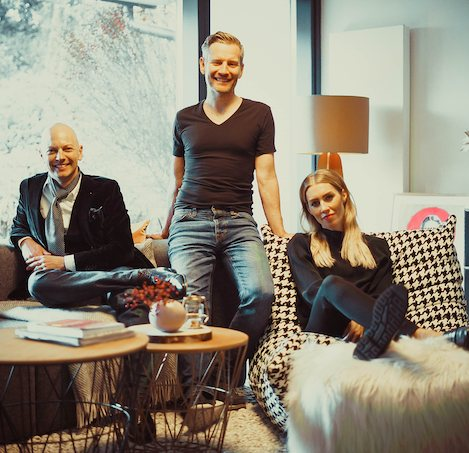

Über Urban Artery
Darum gibt es Urban Artery

Unsere Story
Kunst, die zu dir passt
Wir leben in einer Zeit, in der die Regel ist, dass jeder früher oder später haben kann, was er begehrt. Im Bereich der bildenden Kunst ist das schon etwas anders. Es gibt zahlreiche Künstler, bei denen die erste Frage nicht die des Preises ist, sondern wer eines der begehrten Werke überhaupt kaufen darf. In der Urban Art bzw. Street-Art ist das nochmals zugespitzt.
Hinzu kommt, dass der Weg zum passenden Kunstobjekt oft ein langwieriger ist. Neben dem eigenen Geschmack machen auch Faktoren wie der dafür vorgesehene Platz, die optische Stimmigkeit im Kontext und natürlich der Wunsch nach Individualität die Suche schwierig: Das Kunstobjekt soll perfekt in die Räume und zur eigenen Person passen.
Die Streetart-Szene und unsere Intention
Die allermeisten Künstler dieses Genres arbeiten im Verborgenen. Ihre Künstlernamen sind Pseudonyme und es ist nur wenigen Eingeweihten bekannt, wer sich hinter den Phantomen verbirgt.
Mit Urban Artery könnt ihr am wohl coolsten Kunsttrend seit Andy Warhols Factory teilhaben und euch, eure Kids, euer Auto oder ein anderes Objekt eurer Wahl als Stencil verewigen lassen.
Das Team
Wir sind die Gründer von Urban Artery
Daniela Willers
„Neben meinem Job im Medienbereich begleitet mich das Interesse an Kunst – im Speziellen Urban Art/Street Art – seit jeher. Nach der Geburt meiner Kinder nutzte ich die berufliche Auszeit, mich immer mehr der Kunst zu widmen, und merkte schnell, dass die Nachfrage nach kundenindividueller Kunst sehr groß ist.“
Heiko Willers
„Am Anfang war es nur eine wilde Idee: Wie bekommt man echte Street-Art-Unikate in das Wohnzimmer? Als dann so viele Künstler sofort dabei sein wollten, wurde es konkreter. Die ersten Bilder wurden produziert und wir bekamen tolles Feedback unserer Kunden.“
René S. Spiegelberger
„Eine Künstlerbegegnung hat mich in der Kindheit besonders geprägt: Keith Haring bemalte mir einst eine Swatch-Uhr. Als Teenager wurde er dann einer meiner Helden und führte mich zur Kunst. Mit Urban Artery kann nun jeder auch ohne zugige Ecken und absolutes Insider-Wissen in den Genuss dieser Kunst kommen.“
Werde Teil von Urban Artery!
Du bist Urban-Art-Künstler und möchtest gerne bei Urban Artery mitmachen? Wir freuen uns! Schreib uns einfach eine Mail.
artist@urban-artery.de